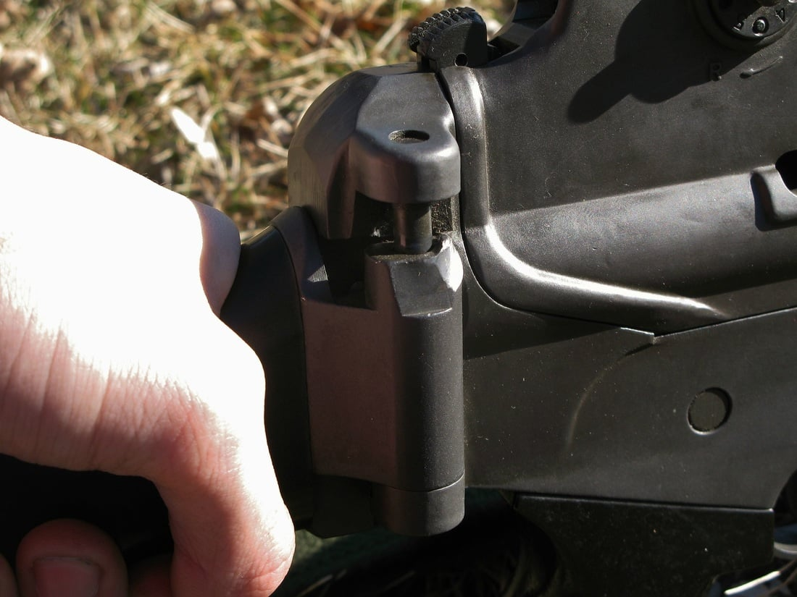
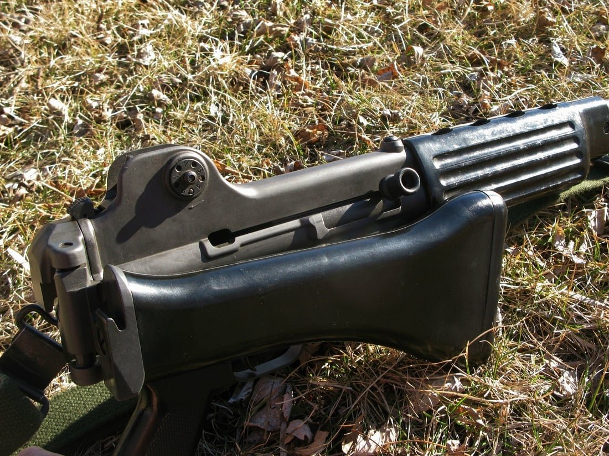

다만 전 사용자에 따라서 일부 결함이 발생할수도 있음


다만 전 사용자에 따라서 일부 결함이 발생할수도 있음
나도 비전투부대라고 m16주더라 육군이었는데
트집잡고싶다
영점 존나 잘 잡아놓은 레어템 가끔씩 있음
시발 저거 ㅈㄴ 용접함 시발 시도 때도 없이 총기 수리부에서 가져와서 하루에 7~80 개씩 용접합 개새끼들.....ㅈㄴ 용접똥 쌓아서 줘버림ㅋㅋㅋㅋㅋㅋㅋㅋㅋㅋㅋㅋㅋㅋㅋㅋㅋㅋㅋㅋㅋ
개머리판은 군화발로 차서 접어야 제맛이지
갖고 놀다가 살 찝히면 음소거 비명 지름
경첩 생각하고 들어왔는데
K1은 그러면 슬라이드폰인가
저거 다시 펼칠때 밑으로 안밀고 힘으로 땡겨서 되나? 하고 땡기니까 살살 갈리면서 펴지더라 그뒤 개머리판 접고 등뒤에 매서 걸으면 개머리판이 덜렁거리며 탁 탁 탁 탁 소리 존나 났음
저거 밀고 풀어야되는지 모르는 놈들 많더라
그러면 총기 손상되는데
에? 접을때야 당연히 밀고하는데 풀땐 그냥 풀리는거 아님?
난 m16이라서 써본적이 없음
난 둘 다 썼는데ㅋㅋ
근데 저 총 이름이 뭐였더라
???:"총기를애인처럼다뤄라"
말년 딱 두달? 전에 m203에서 k2로 바꿨는데
바꾼 k2가 개머리가 안접힘
별 지랄 망치로 두드리고 지랄 개지랄을 해도 안접히길래
영점사격 하기 전날인가 존나 열받아서 걍 땅에 집어던졌는데 뭐가 뽝 하는 소리 들리더니 잘 접히더라..
m16이 k2보다 뭔가 가벼워서 좋았는데
장전방식이 좆같아서 싫었음
m16a3 였었나 총기번호도 기억 안나네
보자마자 욕부터 나오는건 오랫만이네..
M16 받았는데